함께 자라는 예배자
매일 아침, 오직 한 분께
Every morning, for the One alone.
AM1 찬양팀 배지와 섬김 돌아보기 안내
1왜 배지를 주나요
이른 아침 약속한 예배 섬김을 꾸준히 이어 가는 수고를 격려하고, 공동체의 감사를 눈에 보이게 기록하려는 것입니다.
- 배지는 신앙의 수준이나 하나님께 인정받은 정도를 판정하는 표지가 아닙니다.
- 청지기의 신실함(고린도전서 4:2)을 운영의 방향으로 삼지만, 출석만으로 신실함 전체를 판단하지 않습니다.
- 기도의 깊이, 영성, 헌신의 정도는 점수로 매기지 않습니다.
- 몇 명을 골라 순위를 매기지 않습니다. 기준을 채운 사람 모두를 함께 축하합니다.
2배지 16종
분기마다 참여율에 따라 동행 · 자람 · 결실 중 해당하는 가장 높은 단계 하나를 받습니다. 아래 단계를 따로 더 주지 않습니다.
마가복음 4장 · 시편 1:3
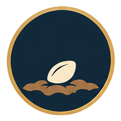
씨앗동행
자람
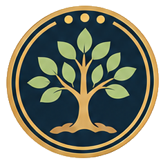
나무결실
마태복음 5:14-16
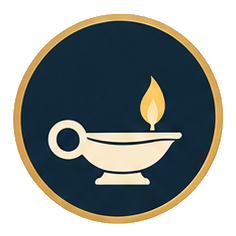
작은 등불동행
자람
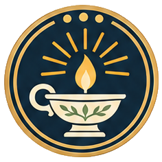
빛을 퍼뜨리는 등불결실
요한복음 15:5
동행
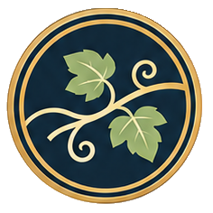
포도 가지자람
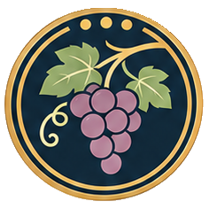
포도송이결실
시편 126:5-6
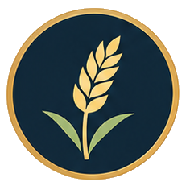
한 이삭동행
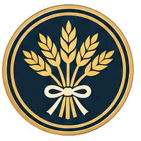
곡식 단자람
결실
누적 기념 배지와 연말 배지
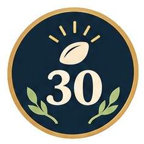
누적 30회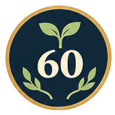
누적 60회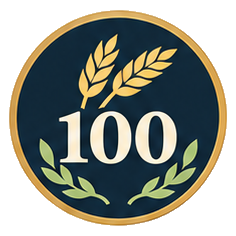
누적 100회- 누적 배지는 그해 실제로 섬긴 예배 수(승인 제외 일수는 넣지 않음)로 세며, 새해에 처음부터 다시 셉니다.
- 식물 · 등불의 세 단계는 디자인으로 표현한 발전 단계입니다. 성경이 세 등급을 정했다는 뜻이 아닙니다.
3참여율은 이렇게 계산합니다
- 판정은 반올림하기 전 비율로 합니다. 예: 39회 중 37회는 94.87%이므로 결실이 아니라 자람입니다.
- 필요한 최소 횟수는 D × 기준 비율을 올림합니다.
| 약속한 일정 D | 동행 (70%) | 자람 (85%) | 결실 (95%) |
|---|---|---|---|
| 39회 | 28회 | 34회 | 38회 |
| 40회 | 28회 | 34회 | 38회 |
예배 총횟수와 각 사람에게 배정된 섬김 횟수는 다릅니다. 교대로 편성하면 D는 사람마다 다릅니다.
4예외와 세부 규칙
- 한 날짜에 여러 역할을 맡아도 그 예배는 1회입니다.
- 담당 역할을 맡아 섬긴 것과 단순히 예배에 참석한 것은 구분합니다. 배지에는 담당 수행만 들어갑니다.
- 연습에만 참석한 날은 예배 수행으로 세지 않습니다.
- 승인된 교대는 두 사람의 배정표를 함께 고치고, 한 자리를 두 사람의 수행으로 겹쳐 세지 않습니다.
- 배정 밖에서 대신 선 경우에는 바뀐 배정으로 기록하고, 실제로 선 사람에게 수행을 인정합니다.
- 질병 · 장례 · 돌봄 같은 급한 사유는 나중에 승인해도 됩니다. 승인 제외는 참석으로 기록하지 않고 D에서 뺍니다.
- 개인 사유의 자세한 내용은 공유하지 않고, 승인 여부만 기록합니다.
- D가 0이면 그 분기는 배지 없이 지나갑니다. D가 13회보다 적으면 작은 표본의 100%를 막기 위해 정규 배지 대신 시작 · 복귀 감사 카드를 드립니다.
- 한 분기 전체를 쉰 경우 그 분기는 배지 없이 지나가고, 연말에 따로 동행의 감사로 격려합니다.
- 70%에 못 미치면 배지를 미루고 다음 분기에 다시 함께합니다. 이미 받은 배지는 회수하지 않습니다.
태도와 돌봄
- 시간 약속, 사전 연락, 준비, 협력은 분기마다 10분 대화로 구체적인 일과 감사를 함께 돌아봅니다.
- 지각이나 소통 문제는 미리 정한 기준에 따라 따로 돌봄과 대화로 다룹니다. 임의로 감점하거나 리더의 인상으로 배지를 취소하지 않습니다.
- 음향 · 기술 · 자막 · 악기 · 보컬 등 예배를 돕는 모든 역할에 같은 계산을 적용합니다.
5연말 감사
한 해 함께 완주: 네 분기 배지를 각각 받고, 연간 참여율 85% 이상이며, 모든 분기가 70% 이상인 경우입니다.
- 연간 참여율 = 네 분기 A의 합 ÷ 네 분기 D의 합. 분기 비율을 단순히 평균하지 않습니다.
- 예: 34/39, 35/39, 38/39, 36/40 → 143/157 = 91.08%. 이 사람은 1분기 자람, 2분기 자람, 3분기 결실, 4분기 자람과 누적 100회 기념 배지를 받고 연말 완주 대상이 됩니다.
- 기준을 채운 모든 사람에게 같은 감사를 드립니다(손편지와 감사장, 식사권이나 도서비 등). 예산은 대상자 수 × 미리 정한 같은 금액입니다.
- 병가 · 돌봄 · 중간 합류로 기준에 못 미친 분도 따로 동행의 감사로 인정합니다. 완주를 위해 아픈 몸으로 나오라고 하지 않습니다.
- 누적 100회 배지는 연말 완주의 필수 조건이 아닙니다.
6운영 순서
- 연초 — 규칙과 일정을 함께 정하고 개인 배정표를 확정합니다.
- 매 예배 — 담당자가 앱의 출석 체크에서 섬김 · 불참 · 승인 제외를 기록합니다.
- 매월 — 각자 '내 기록'에서 확인하고, 다르면 7일 안에 관리자에게 알립니다.
- 분기 말 — 담당자가 계산하고, 다른 담당자 한 명이 검토하고, 본인이 확인한 뒤 배지를 수여합니다.
- 연말 — 네 분기 배지와 연간 참여율을 확인하고 기준을 채운 모든 사람에게 감사를 전합니다.
기록을 살피는 사람의 실수로 결과가 달라졌다면 바로 바로잡습니다. 첫 분기는 시범으로 운영하며, 참여율과 함께 부담감 · 병가 사용 · 중도 이탈 · 교대 부담을 함께 살핍니다.
7앱에서 보는 법
- 배지 탭 — 최근 수여 소식과 올해 배지 수집판을 봅니다. 동료의 배지 아래에 "축하해요" 같은 한 줄 축하를 남길 수 있습니다.
- 명단 — 각자의 사진 아래에 가장 최근 해의 배지가 작게 표시되고, 누르면 해마다 모은 배지를 볼 수 있습니다.
- 내 기록 — 올해 내 배지, 이번 분기에 지금까지 섬긴 횟수, 받은 축하 글을 봅니다.
- 배지는 팀 안에서 함께 보며 축하합니다. 공개를 원하지 않으면 관리자에게 말씀해 주세요. '배지 비공개'로 바꾸면 본인과 관리자만 봅니다.
- 앱은 회사 메일로 로그인한 팀원만 볼 수 있습니다.
8그림 자료
눌러서 크게 볼 수 있습니다. 인쇄할 때는 관리자에게 PDF를 요청하세요.
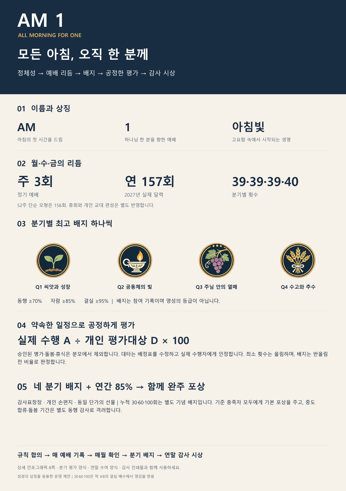
요약 포스터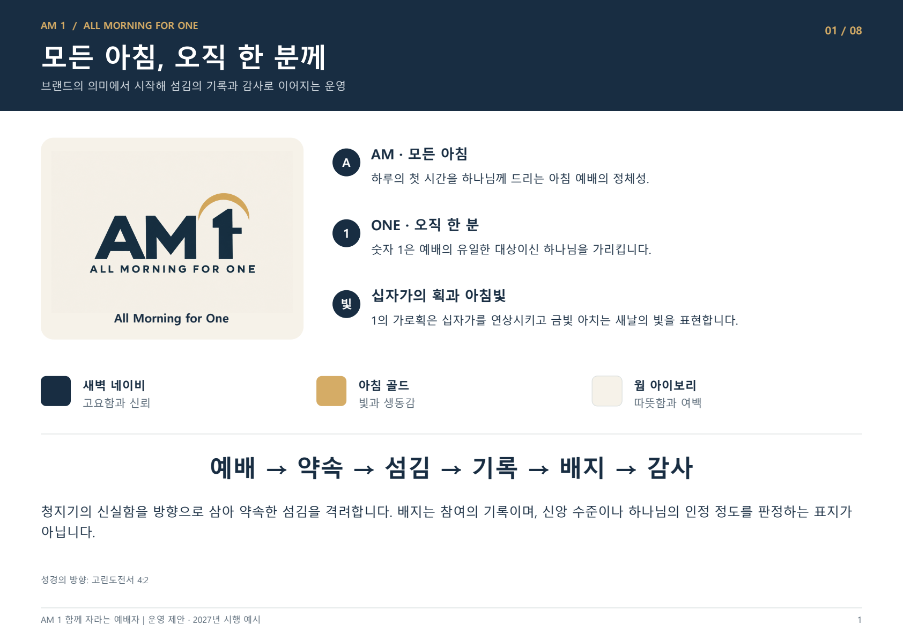
1. 정체성과 로고 의미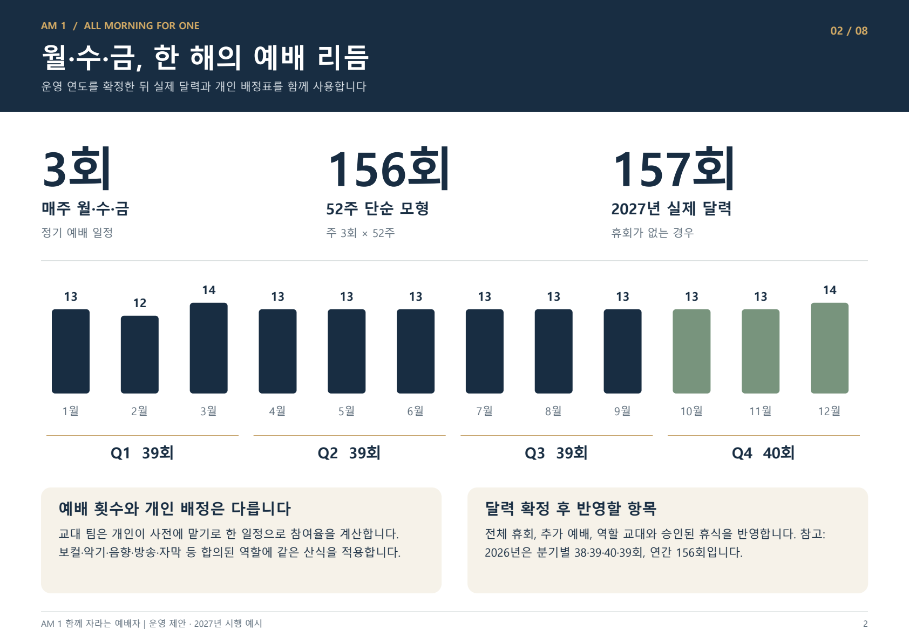
2. 연간 예배 리듬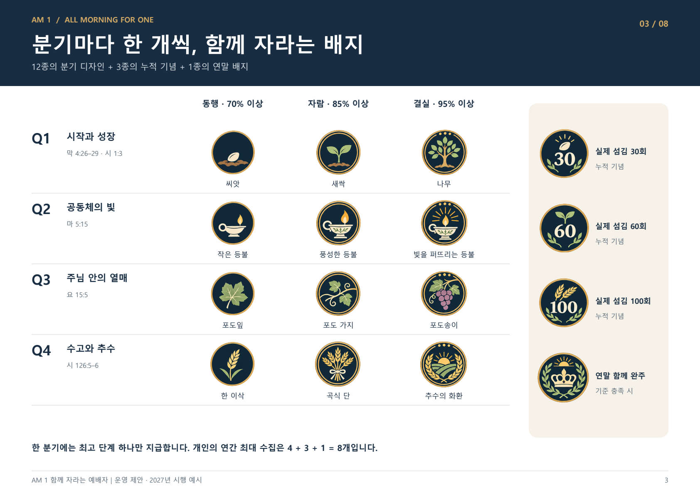
3. 배지 16종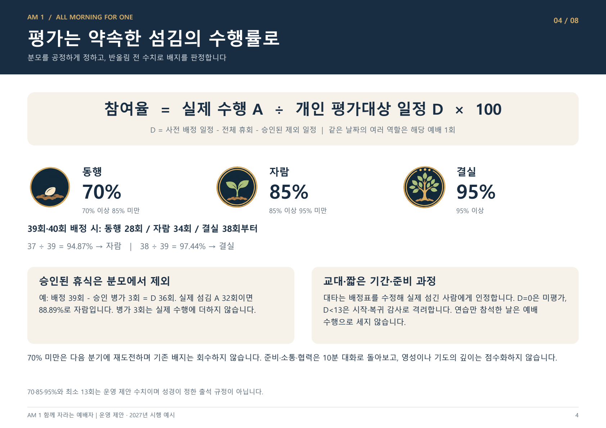
4. 참여율 계산과 예외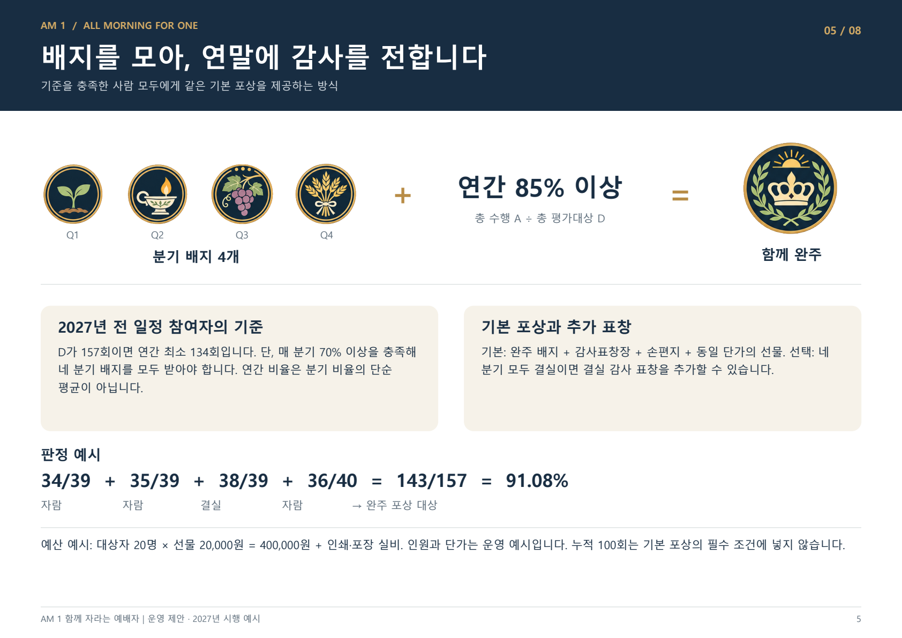
5. 연말 감사와 예시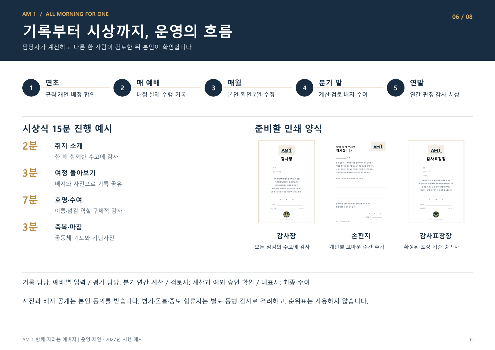
6. 운영 · 시상 흐름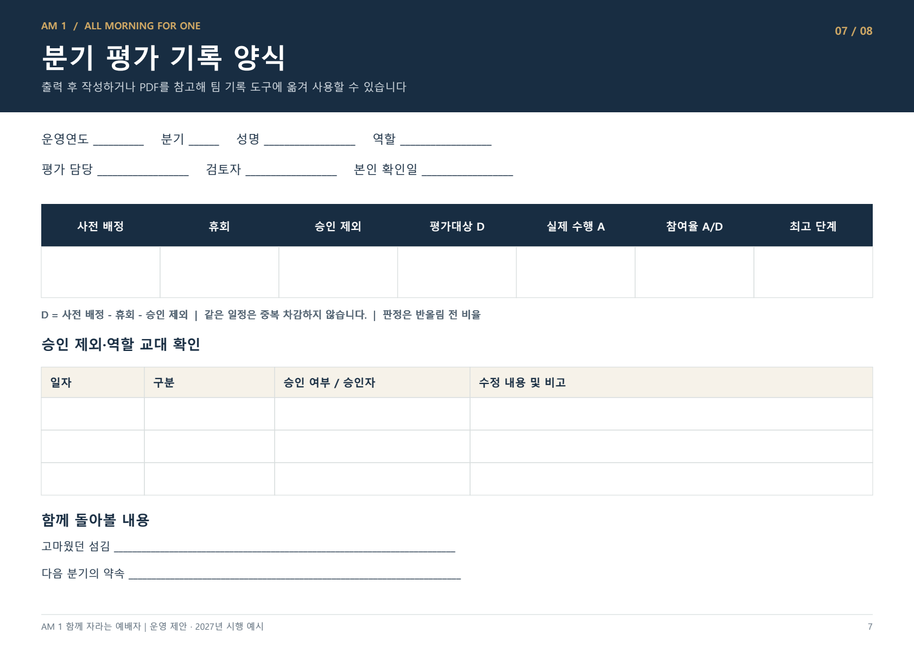
7. 분기 돌아보기 기록 양식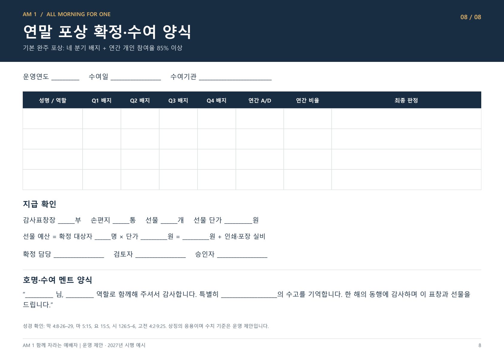
8. 연말 수여 기록 양식디자인에 영감을 준 성경 본문: 고린도전서 4:2 · 마가복음 4:8, 4:26-29 · 마태복음 5:14-16 · 요한복음 15:5 · 시편 1:3, 126:5-6 · 고린도전서 9:25. 본문은 성경에서 직접 읽어 주세요.